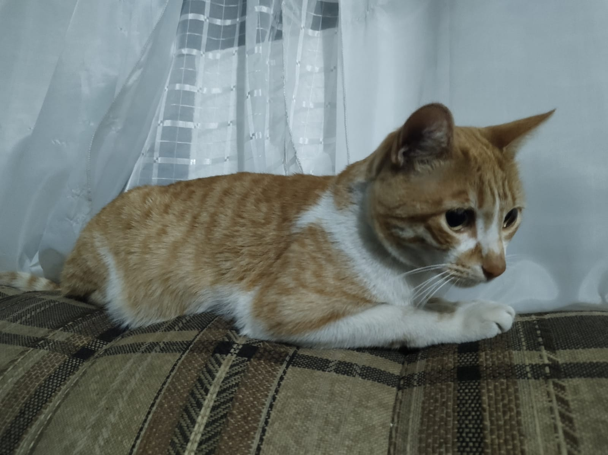
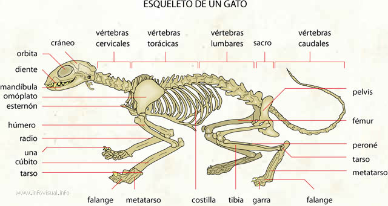
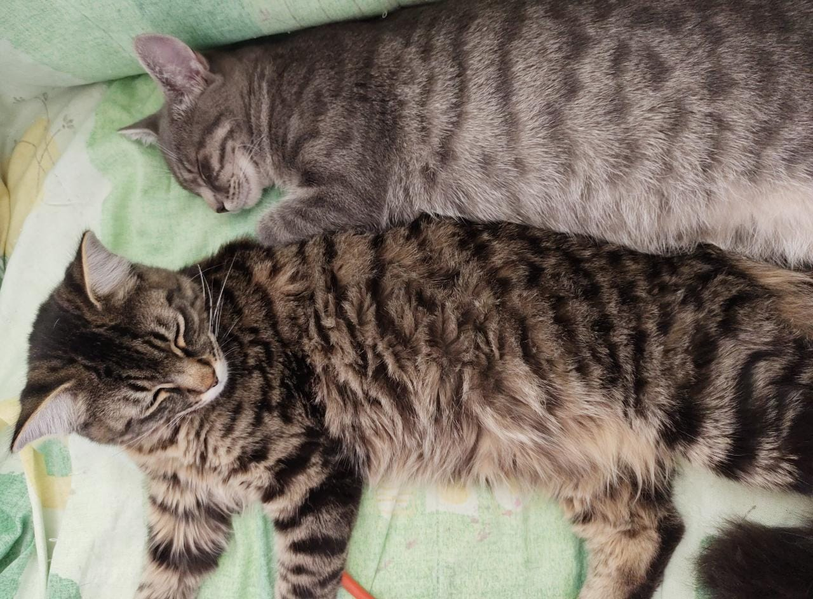

Caracteristicas
- Mamífero cuadrúpedo, con cola. 
- Posee unos 230 huesos que le permiten una gran flexibilidad y elasticidad. 
- Destacan sus bigotes, que son pelos modificados con función sensitiva.
- Su coloración es muy variable y puede ser monocolor, bicolor o tricolor y presentar diferentes patrones atigrados y longitudes. 
- Hay variaciones entre ejemplares y razas más grandes o más pequeñas.
- Su peso medio de entre 3 y 5 kg.
Datos curiosos
Algunos datos que no sabias de tu felino.
La domesticación fue una “idea del propio gato” cuando compartían su territorio con humanos que almacenaban grano y, por tanto, atraían roedores (es decir, una relación de comensalidad).
Al contrario de lo que se cree a nivel popular, donde la imagen del gato va unida a un plato de leche, los gatos adultos no necesitan consumir este alimento.
Una de las características del gato macho que más curiosa resulta es su pene con espículas. Esta conformación se debe a que, al terminar la cópula, la gata necesita recibir un estímulo para que se produzca la ovulación. Las espículas del pene, al salir a contrapelo, lo consiguen.
Por último, el amor a los gatos y su popularidad actual han llevado a algunos ejemplares a convertirse en alcaldes de sus ciudades.
Son animales vivíparos, lo que quiere decir que paren a sus crías vivas en camadas de unos 4-5 gatitos. que serán alimentados con la leche de su madre durante sus primeras semanas de vida.
Destaca también su sentido de la vista, del oído y del olfato, lo que facilita su vida como animal depredador.
Su temperatura corporal se encuentra entre 38-39 ºC.